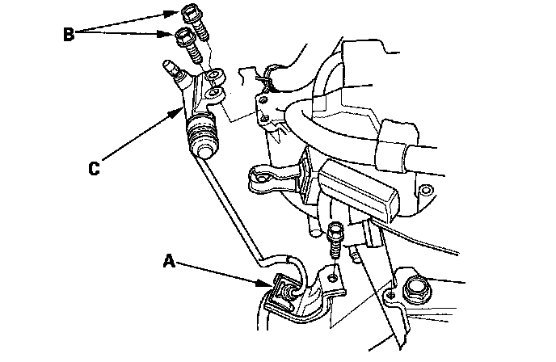
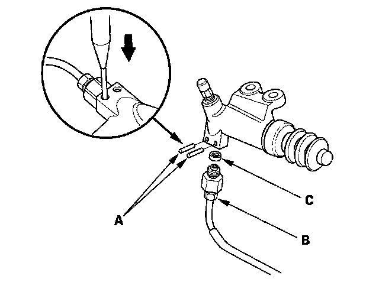
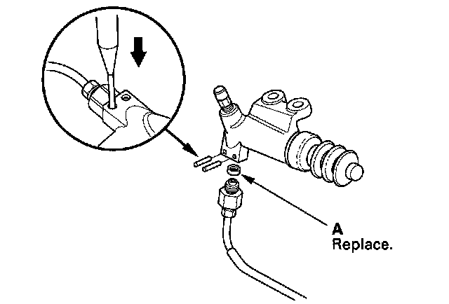
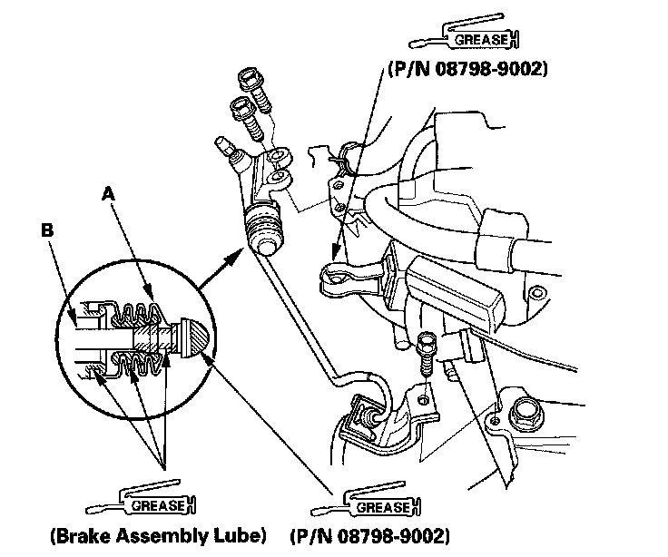
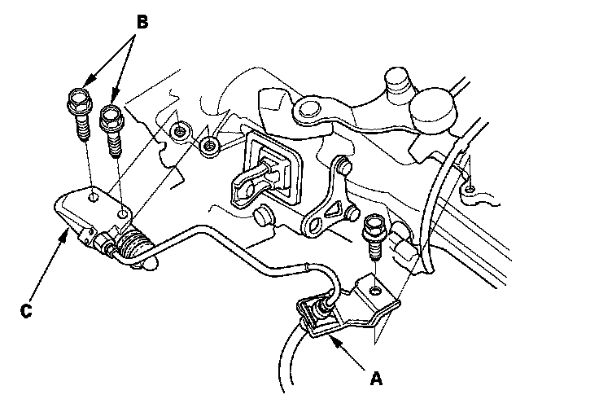
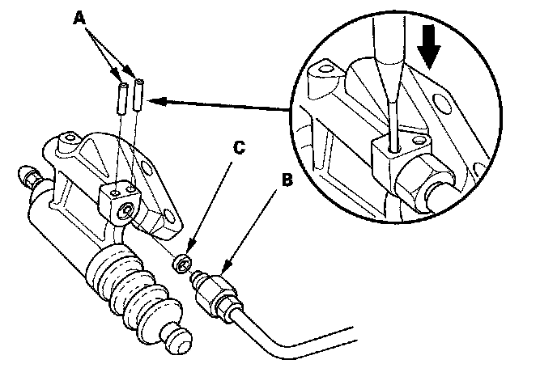
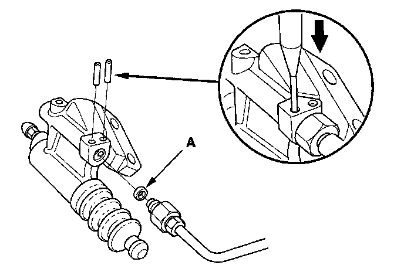
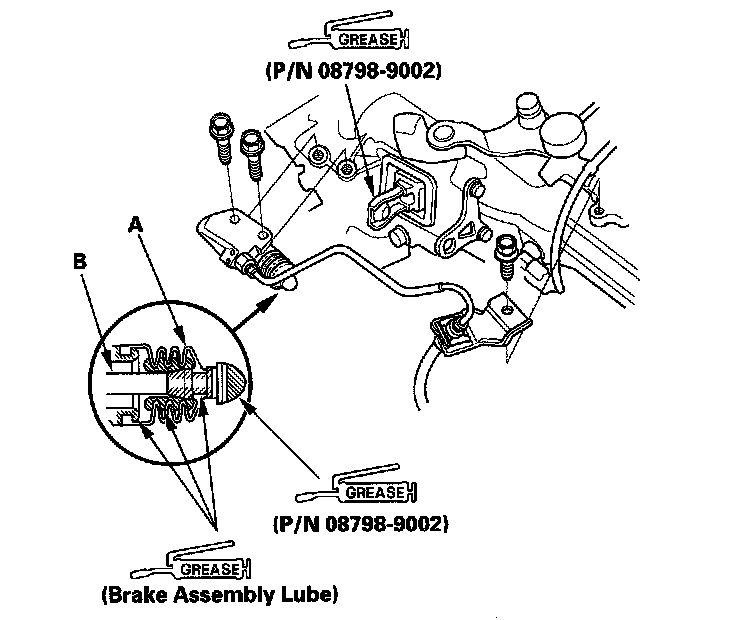

Clutch Slave Cylinder: Service and Repair
Slave Cylinder ReplacementNOTE:
^ Use fender covers to avoid damaging painted surfaces.
^ Do not spill brake fluid on the vehicle; it may damage the paint. If brake fluid does contact the paint, wash it off immediately with water.
5-Speed Model
1. Remove the clutch line bracket (A), the mounting bolts (B) and the slave cylinder (C).

2. Remove the roll pins (A). Disconnect the clutch line (B), and remove the O-ring (C). Plug or wrap the end of the clutch line with a shop towel to prevent brake fluid from coming out.

3. Install the slave cylinder in the reverse order of removal. Install the new O-ring (A).

4. Pull back the boot (A), and apply brake assembly lube to the boot and slave cylinder rod (B). Reinstall the boot.

5. Apply super high temp urea grease (P/N 08798-9002) to the pushrod of the slave cylinder and the release fork. Tighten the slave cylinder mounting bolts to 22 Nm (2.2 kgf-m, 16 lbf-ft).
6. Bleed the clutch hydraulic system.
7. Refill the brake fluid in the reservoir to the MAX (upper) level line.
8. Check the clutch operation, and check for leaks.
9. Test-drive the vehicle.
6-Speed Model
1. Remove the clutch line bracket (A), the mounting bolts (B), and the slave cylinder (C).

2. Remove the roll pins (A). Disconnect the clutch line (B), and remove the O-ring (C). Plug or wrap the end of the clutch line with a shop towel to prevent brake fluid from coming out.

3. Install the slave cylinder in the reverse order of removal. Install the new O-ring (A).

4. Pull back the boot (A), and apply brake assembly lube to the boot and slave cylinder rod (B). Reinstall the boot.

5. Apply super high temp urea grease (P/N 08798-9002) to the pushrod of the slave cylinder and the release fork. Tighten the slave cylinder mounting bolts to 22 Nm (2.2 kgf-m, 16 lbf-ft).
6. Bleed the clutch hydraulic system.
7. Refill the brake fluid in the reservoir to the MAX (upper) level line.
8. Check the clutch operation, and check for leaks.
9. Test-drive the vehicle.